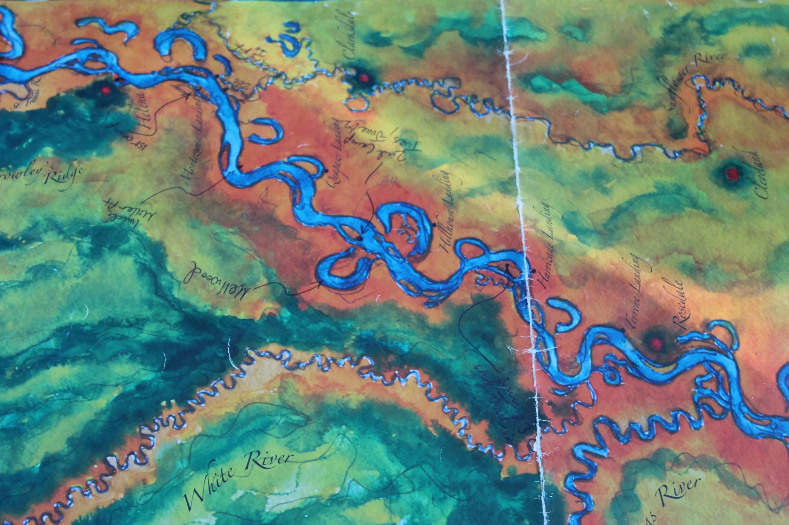
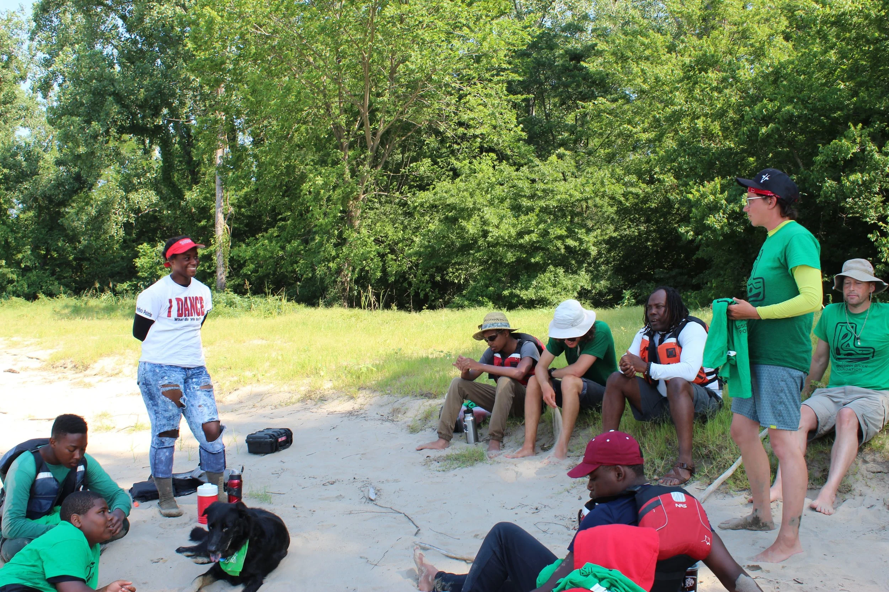

On the first night of this trip, one of the volunteers shared a quote by Eustace Conway about the difference between circles and squares. Everything in nature is a circle, the water, the life cycle of living things. Everything in modern life is a box, our houses, our phones, our cars, our computers. Eustance Conway urges us to "break out of the box!"
This idea has set the tone for our week. As we lived closer to nature we found ourselves more and more aware of the circle, of how everything is connected. On this last day, we talked about how little we have missed those boxes we thought we needed, our comfortable beds, our showers our air conditioning.

We ended our day by welcoming each student into the crew. They have done the journey and proven themselves as equals. Each leader shared something about how they have seen the students change and each student shared what the trip meant to them.
I began thinking about this trip five years ago when I moved to Helena. Since I began planning it in earnest it has caused me significant heartbreak and stress. As I recruited and recruited and recruited and got so few takers I began to wonder if I was really doing something worthwhile.
As I listen to these kids talk about their experience I know I was right. They felt the power of nature, they felt its ability to bring peace to a troubled mind. They know that the Mississippi River is here for them and belongs to them and is theirs to protect. They broke out of their box and have seen all the world has to offer them.

When we got back on the bus to travel home, our phones, those tiny man-made boxes, regained service but no one wanted to use them. Instead, we slept, as people do when they know they are connected by something greater than themselves.